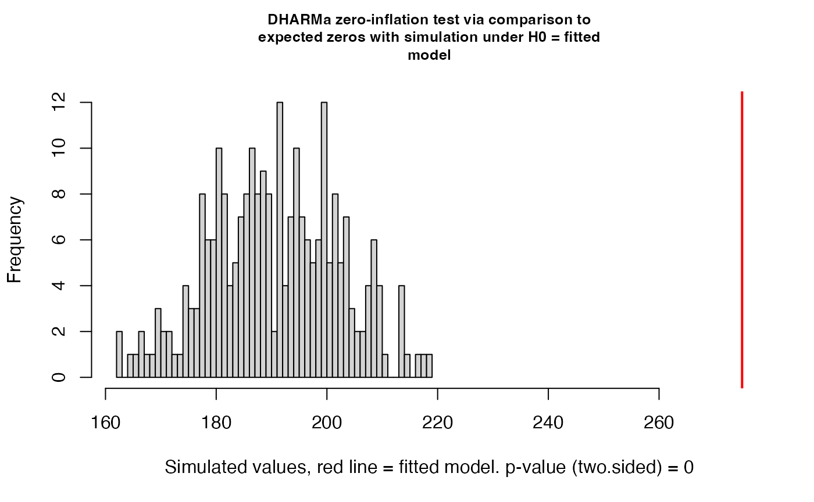
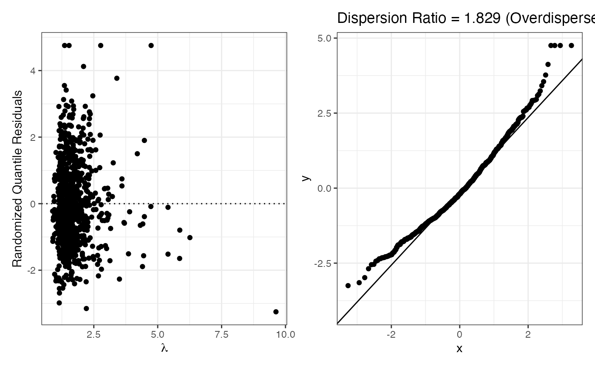

tutorial
tutorial.Rmd
library(smartcount)Dataset
We use bioChemists dataset from the pscl
package, which records the number of articles published by 915 PhD
biochemists.
library(pscl)
#> Classes and Methods for R originally developed in the
#> Political Science Computational Laboratory
#> Department of Political Science
#> Stanford University (2002-2015),
#> by and under the direction of Simon Jackman.
#> hurdle and zeroinfl functions by Achim Zeileis.
data("bioChemists")
head(bioChemists)
#> art fem mar kid5 phd ment
#> 1 0 Men Married 0 2.52 7
#> 2 0 Women Single 0 2.05 6
#> 3 0 Women Single 0 3.75 6
#> 4 0 Men Married 1 1.18 3
#> 5 0 Women Single 0 3.75 26
#> 6 0 Women Married 2 3.59 2Summarize Data
Before fitting model, we examine whether the data user provides is a data frame and whether the response variable exists
summarize_count_data(bioChemists, "art")
#> $n
#> [1] 915
#>
#> $mean
#> [1] 1.692896
#>
#> $variance
#> [1] 3.709742
#>
#> $min
#> [1] 0
#>
#> $max
#> [1] 19
#>
#> $n_zeros
#> [1] 275
#>
#> $pct_zeros
#> [1] 30.05464
#>
#> $var_mean_ratio
#> [1] 2.191358Fit a Poisson Model
We start with a Poisson regression
fit_p <- fit_count(bioChemists, art~ fem + mar + kid5 + phd + ment,
model="poisson")Check Conditions
check_conditions(fit_p)
#> $plot
#>
#> $pearson_ratio
#> [1] 1.828984
#>
#> $dispersion_diagnosis
#> [1] "Overdispersion detected. Consider Negative Binomial or Quasi-Poisson."
#>
#> $zero_inflation_pvalue
#> [1] 0
#>
#> $suggestion
#> [1] "Zero Inflation and Overdispersion Problem. Consider Zero-inflated Negative Binomial!"
#>
#> $vif
#> fem mar kid5 phd ment
#> 1.108477 1.264643 1.286110 1.067307 1.081109
#>
#> $sample_size
#> $sample_size$total_events
#> [1] 1549
#>
#> $sample_size$n_predictors
#> [1] 6
#>
#> $sample_size$threshold
#> [1] 60
#>
#> $sample_size$is_sufficient
#> [1] TRUETry fit ZIP based on suggestions
The Poisson check above suggested that the data may have overdispersion and/or zero inflation. We try a Zero-Inflated Poisson (ZIP) model to better handle the excess zeros.
fit_zip <- fit_count(bioChemists, art ~ fem + mar + kid5 + phd + ment,
model = "zip")
check_conditions(fit_zip)
#> $dispersion_ratio
#> [1] 1.533498
#>
#> $suggestion
#> [1] "Extra overdispersion detected. Consider ZINB."Evaluate and Compare Models
We use evaluate_model() to look at fit statistics. AIC
and BIC measure relative fit quality (lower is better).
evaluate_model(fit_p)$stats
#> $AIC
#> [1] 3314.113
#>
#> $BIC
#> [1] 3343.026
#>
#> $logLik
#> [1] -1651.056
#>
#> $mcfadden_r2
#> [1] 0.05251839
#>
#> $mcfadden_interpretation
#> [1] "Weak"
#>
#> $deviance_r2
#> [1] 0.1007119
#>
#> $deviance_interpretation
#> [1] "Moderate"
evaluate_model(fit_zip)$stats
#> $AIC
#> [1] 3233.546
#>
#> $BIC
#> [1] 3291.373
#>
#> $logLik
#> [1] -1604.773
#>
#> $mcfadden_r2
#> [1] NA
#>
#> $mcfadden_interpretation
#> [1] "Not available for zero-inflated models"
#>
#> $deviance_r2
#> [1] NA
#>
#> $deviance_interpretation
#> [1] "Not available for zero-inflated models"To compare the two models directly, we pass both into
evaluate_model(). Since one model is zero-inflated and the
other is not, the function automatically uses the Vuong
test for non-nested comparison.
comparison <- evaluate_model(fit_p, fit_zip)
#> Vuong Non-Nested Hypothesis Test-Statistic:
#> (test-statistic is asymptotically distributed N(0,1) under the
#> null that the models are indistinguishible)
#> -------------------------------------------------------------
#> Vuong z-statistic H_A p-value
#> Raw -4.180493 model2 > model1 1.4544e-05
#> AIC-corrected -3.638551 model2 > model1 0.00013709
#> BIC-corrected -2.332762 model2 > model1 0.00983032
comparison$comparison
#> NULLA negative Vuong z-statistic indicates that the second model (ZIP) is preferred over the first (Poisson).
Interpret Final Model
We use interpret() to translate the ZIP coefficients
into clear, non-technical language. The output table includes:
-
estimated_log: coefficient on the log scale -
estimated_exp: exponentiated coefficient (rate ratio or odds ratio) -
percentage: percent change in expected count -
ci_lower_pct/ci_upper_pct: 95% confidence interval (percent scale) -
z_value/p_value: hypothesis test statistics -
interpretation: plain-English interpretation
result <- interpret(fit_zip)
#> This model has an offset. Coefficients describe rates per unit of the offset variable.
result[, c("variable", "percentage", "ci_lower_pct", "ci_upper_pct", "p_value")]
#> variable percentage ci_lower_pct ci_upper_pct p_value
#> 1 count_(Intercept) 89.807 49.643 140.752 0.0000
#> 2 count_femWomen -18.872 -28.353 -8.137 0.0010
#> 3 count_marMarried 10.932 -3.500 27.523 0.1446
#> 4 count_kid5 -13.352 -21.044 -4.911 0.0025
#> 5 count_phd -0.615 -6.475 5.613 0.8424
#> 6 count_ment 1.826 1.369 2.285 0.0000
#> 7 zero_(Intercept) -43.845 -79.308 52.397 0.2573
#> 8 zero_femWomen 11.599 -35.545 93.227 0.6952
#> 9 zero_marMarried -29.813 -62.338 30.799 0.2650
#> 10 zero_kid5 24.247 -15.465 82.612 0.2692
#> 11 zero_phd 0.128 -24.681 33.107 0.9930
#> 12 zero_ment -12.551 -19.972 -4.442 0.0030The full interpretation column:
result$interpretation
#> [1] "The expected count is 1.898 for observations that are not structural zeros, when all continuous predictors are zero and all categorical predictors are at their reference level."
#> [2] "For femWomen , the expected count changes by -18.872 % (95% CI: -28.353 % to -8.137 %), adjusting for simultaneous linear change in other count-part predictors."
#> [3] "For marMarried , the expected count changes by 10.932 % (95% CI: -3.5 % to 27.523 %), adjusting for simultaneous linear change in other count-part predictors."
#> [4] "For kid5 , the expected count changes by -13.352 % (95% CI: -21.044 % to -4.911 %), adjusting for simultaneous linear change in other count-part predictors."
#> [5] "For phd , the expected count changes by -0.615 % (95% CI: -6.475 % to 5.613 %), adjusting for simultaneous linear change in other count-part predictors."
#> [6] "For ment , the expected count changes by 1.826 % (95% CI: 1.369 % to 2.285 %), adjusting for simultaneous linear change in other count-part predictors."
#> [7] "The log odds of being a structural zero is -0.577 when all continuous predictors are zero and all categorical predictors are at their reference level."
#> [8] "For femWomen , the log odds of being a structural zero changes by 0.11 (odds ratio: 1.116 ), adjusting for simultaneous linear change in other zero-part predictors."
#> [9] "For marMarried , the log odds of being a structural zero changes by -0.354 (odds ratio: 0.702 ), adjusting for simultaneous linear change in other zero-part predictors."
#> [10] "For kid5 , the log odds of being a structural zero changes by 0.217 (odds ratio: 1.242 ), adjusting for simultaneous linear change in other zero-part predictors."
#> [11] "For phd , the log odds of being a structural zero changes by 0.001 (odds ratio: 1.001 ), adjusting for simultaneous linear change in other zero-part predictors."
#> [12] "For ment , the log odds of being a structural zero changes by -0.134 (odds ratio: 0.874 ), adjusting for simultaneous linear change in other zero-part predictors."ZIP coefficients are split into two parts:
-
count_xxx: how the predictor affects the expected count among non-structural-zero observations -
zero_xxx: how the predictor affects the log-odds of being a structural zero (i.e., someone who never publishes)
Extension: Generalized Poisson with Real Data
Beyond the standard count regression models, smartcount
also supports Generalized Poisson regression, which is more flexible
than Poisson when the data exhibit overdispersion (or, less commonly,
underdispersion).
To demonstrate, we replicate the analysis from Akter et al. (2025), “Accounting for overdispersion in skilled antenatal care: Identifying determinants using Bangladesh Demographic and Health Survey 2022 data” (PLOS ONE). The authors use a Generalized Poisson model to study factors influencing the number of skilled antenatal care visits among 3,839 Bangladeshi women.
df <- read.csv("../data-raw/bangladesh_anc.csv")
fit_gp <- fit_count(
df,
ANC_skilled ~ Mothers_Edu + Wealth_index + Media_Exposed,
model = "genpois"
)
#> Warning in check_dep_version(dep_pkg = "TMB"): package version mismatch:
#> glmmTMB was built with TMB package version 1.9.19
#> Current TMB package version is 1.9.21
#> Please re-install glmmTMB from source or restore original 'TMB' package (see '?reinstalling' for more information)
check_conditions(fit_gp)
#> $pearson_ratio
#> [1] 1.003438
#>
#> $diagnosis
#> [1] "Pearson ratio close to 1 — Generalized Poisson appears to handle the dispersion well."
#>
#> $sample_size
#> $sample_size$total_events
#> [1] 11737
#>
#> $sample_size$n_predictors
#> [1] 4
#>
#> $sample_size$threshold
#> [1] 40
#>
#> $sample_size$is_sufficient
#> [1] TRUEThe Pearson dispersion ratio close to 1 confirms that the Generalized Poisson model handles the overdispersion well.
interpret(fit_gp)
#> variable estimated_log estimated_exp percentage ci_lower_pct
#> 1 (Intercept) 0.241 1.273 27.315 18.564
#> 2 Mothers_Edu 0.272 1.313 31.278 27.227
#> 3 Wealth_index 0.158 1.171 17.073 13.462
#> 4 Media_Exposed 0.245 1.277 27.714 21.733
#> ci_upper_pct z_value p_value
#> 1 36.712 6.647 0
#> 2 35.458 17.018 0
#> 3 20.800 9.860 0
#> 4 33.989 9.997 0
#> interpretation
#> 1 The expected count is 1.273 when all other predictors are zero.
#> 2 For every one-unit increase in Mothers_Edu , the expected count changes by 31.278 % (95% CI: 27.227 % to 35.458 %).
#> 3 For every one-unit increase in Wealth_index , the expected count changes by 17.073 % (95% CI: 13.462 % to 20.8 %).
#> 4 For every one-unit increase in Media_Exposed , the expected count changes by 27.714 % (95% CI: 21.733 % to 33.989 %).
evaluate_model(fit_gp)$stats
#> $AIC
#> [1] 15837.4
#>
#> $BIC
#> [1] 15868.66
#>
#> $logLik
#> [1] -7913.7
#>
#> $mcfadden_r2
#> [1] NA
#>
#> $mcfadden_interpretation
#> [1] "Not available for glmmTMB models"
#>
#> $deviance_r2
#> [1] NA
#>
#> $deviance_interpretation
#> [1] "Not available for glmmTMB models"Conclusion
The smartcount package provides an end-to-end workflow
for count regression analysis:
- Summarize the data to understand its structure
- Fit a starting Poisson model
- Check the model’s conditions
- Switch to a more appropriate model if needed (Quasi-Poisson, Negative Binomial, ZIP, ZINB, or Generalized Poisson)
- Evaluate model fit and compare alternatives
- Interpret results in plain language
This integrated workflow saves users from manually stitching together functions from different packages and applies appropriate diagnostic and interpretation logic for each model type.
References
Akter et al. (2025). Accounting for overdispersion in skilled antenatal care: Identifying determinants using Bangladesh Demographic and Health Survey 2022 data. PLOS ONE. https://doi.org/10.1371/journal.pone.0346258
Long, J. S. (1990). The origins of sex differences in science. Social Forces, 68(4), 1297-1316. (
bioChemistsdataset)